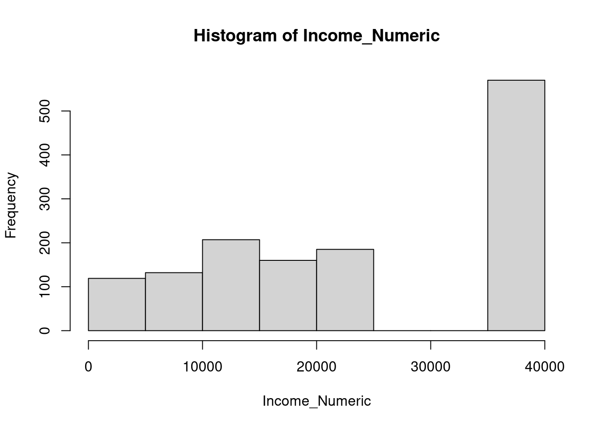

Code
install.packages("pak", dependencies=TRUE)
library(pak)
pkg_install("tidyverse")
pkg_install("readxl")
pkg_install("reticulate")
devtools::session_info()Copyright Ryan Womack, 2026. Данная работа распространяется под лицензией CC BY-NC-SA 4.0
Анализ данных Барометра Центральной Азии
Обработка данных, разведочный анализ данных и визуализация данных Центральноазиатского Барометра.
первоначально разработано для презентации на Американский Университет Центральной Азии, Весна 2026
[Обратите внимание: русский текст переведен с английского с помощью машинного перевода]
Этот семинар посвящен работе с данными, начиная с основ импорта и подготовки данных и заканчивая описательной статистикой, базовым анализом и визуализацией данных. Программирование ведется преимущественно на языке R, но также используются некоторые примеры на Python. И R, и Python — отличные инструменты для анализа данных, поэтому в некоторой степени ваш выбор зависит от предпочтений и уровня знакомства с языком. Язык R возник из области статистики и дополнил ее вычислительными функциями, в то время как Python — это универсальный язык программирования, к которому были добавлены значительные возможности статистического анализа.
Статистика — это широкая область, предоставляющая строгие инструменты для анализа данных с помощью математики. Хотя мы можем рассматривать машинное обучение как тему информатики, фундаментальная теория машинного обучения в основном основана на статистике. Машинное обучение (МL) относится ко многим возможным методам использования вычислительных ресурсов на основе математических моделей для понимания данных и прогнозирования на их основе. Искусственный интеллект (AI) также является частью машинного обучения, и до роста популярности генеративного AI (Generative AI) AI/ML обычно обозначали широкий набор аналитических методов. Генеративный AI (GenAI) в более узком смысле относится к ИИ, который делает вероятностные предположения на основе больших объемов обучающих данных, обычно используя большие языковые модели (LLM). Поскольку GenAI не обеспечивает воспроизводимых результатов, он не так полезен для получения надежных результатов исследований. Vibe coding, программирование с использованием GenAI, или разработка компьютерного кода и синтаксиса, может иметь некоторые применения, но его сложно использовать без базового понимания соответствующих языков программирования. В случае текущих проектов, требующих постоянных изменений в расширяющейся кодовой базе, GenAI хуже справляется с созданием кода, который не меняет структуру проекта.
Данный семинар не охватывает установку R и RStudio, но предполагает наличие у вас рабочей копии этих программ.
R — это программное обеспечение с открытым исходным кодом для статистического анализа, доступное по адресу R-project.org. Рекомендуется сначала установить R. Команды R можно выполнять во многих редакторах и IDE, непосредственно в терминале или через скриптовые файлы. Однако один из самых мощных и распространенных методов, который мы будем использовать здесь, — это использование IDE RStudio.
RStudio, доступный на Posit в виде загрузки с открытым исходным кодом, — это инструмент для создания и запуска кода на языке R (а также на Python и нескольких других языках), обладающий множеством полезных функций и шаблонов для работы с другими форматами и инструментами в экосистеме R. RStudio будет использовать установленную вами версию R, работая как надстройка над ней. Posit также разрабатывает Positron — более новую IDE с большей гибкостью для работы с R, Python и другими возможными языками. В этом мастер-классе не используется Positron, хотя код должен работать и там.
И RStudio, и Positron внедряют в свои интерфейсы инструменты подсказок на основе искусственного интеллекта, которые, как утверждается, работают с конкретным кодом вашего проекта и понимают его. Их следует предпочитать использованию сторонних сервисов, таких как ChatGPT.
Для немедленного использования без установки попробуйте следующее:
Более подробную информацию можно найти в видеоролике Начало работы с R (или в других веб-уроках и руководствах).
Python также является языком с открытым исходным кодом и может использоваться с различными редакторами и инструментами, которые здесь не описаны подробно.
Система справки R легкодоступна. Используйте вопросительный знак перед именем конкретной функции, чтобы открыть ее страницу руководства ( ?sample или ?rnorm). Используйте два вопросительных знака для поиска. Вкладка «Справка» в правом нижнем углу RStudio также предоставляет полный доступ к встроенной справке, включая руководства и поиск.
Поиск в интернете справки по R может быть полезен, поскольку существует множество руководств, статей в блогах и других материалов по общим методам и конкретным пакетам R. Полезно добавить к поисковому запросу что-то вроде «статистика R», «программное обеспечение R» или «пакет R», чтобы отличать его от всех других случаев использования буквы R!
Для установки мы будем использовать пакет pak, поскольку это более полный подход к управлению пакетами. При желании замените команды pkg на версии, созданные с помощью install.packages().
В этом занятии предпочтительно используется набор пакетов tidyverse для обработки данных, хотя те же задачи можно выполнить в базовом R с помощью других функций. Установите pak и tidyverse, если они еще не установлены в вашей системе. Нам также понадобится reticulate для запуска фрагментов кода Python.
install.packages("pak", dependencies=TRUE)
library(pak)
pkg_install("tidyverse")
pkg_install("readxl")
pkg_install("reticulate")
devtools::session_info()Обратите внимание, что команду update.packages() можно периодически запускать для проверки наличия более новых версий установленных пакетов.
Загрузите пакеты, чтобы мы могли с ними работать.
library(readxl)
library(tidyverse)── Attaching core tidyverse packages ──────────────────────── tidyverse 2.0.0 ──
✔ dplyr 1.2.0 ✔ readr 2.2.0
✔ forcats 1.0.1 ✔ stringr 1.6.0
✔ ggplot2 4.0.2 ✔ tibble 3.3.1
✔ lubridate 1.9.5 ✔ tidyr 1.3.2
✔ purrr 1.2.1
── Conflicts ────────────────────────────────────────── tidyverse_conflicts() ──
✖ dplyr::filter() masks stats::filter()
✖ dplyr::lag() masks stats::lag()
ℹ Use the conflicted package (<http://conflicted.r-lib.org/>) to force all conflicts to become errorsСсылки справа предоставляют альтернативные способы доступа к этому контенту. Вы можете выбрать светлый или темный режим HTML, загрузить PDF-файл или файл Word в формате Docx — все они будут содержать один и тот же контент. Также доступны файлы кода на языке R (.R) или Python (.py), если вы хотите отделить код от описания.
Кроме того, справа приведены ссылки на машинный перевод этого контента на русский и киргизский языки.
Теперь загрузим reticulate (только для поддержки Python). Необходимо указать правильное местоположение Python, соответствующее нашей системе.
Для тех, кто хочет попробовать выполнить те же шаги обработки данных на Python, предоставляется файл Python. Обратите внимание, что файл Python был переведен машинным способом из R.
# Sys.setenv(RETICULATE_PYTHON = "/usr/bin/python3")
library(reticulate)
use_python("/usr/bin/python3")Как вам, вероятно, известно, проект Барометр Центральной Азии проводит опросы и исследования в странах Центральной Азии (Казахстан, Кыргызстан, Таджикистан, Туркменистан и Узбекистан) и регулярно публикует результаты. За исключением последней волны данных, данные Барометра Центральной Азии можно бесплатно скачать с их веб-сайта, указав контактный адрес электронной почты. Эти опросы изучают современные политические и социальные взгляды и позволяют проводить долгосрочные сравнения, а также межстрановые сравнения.
На этом первом семинаре мы познакомимся с Барометром Центральной Азии, рассмотрев последние данные (2022 год) по одной стране (Кыргызстан). Второй семинар расширит и углубит наше понимание, добавив к анализу дополнительные годы и страны, а также изучив более сложные методы обработки и анализа данных.
Прежде чем заниматься программированием или статистическим анализом, первым шагом в работе с реальными данными является понимание их структуры и смысла. Нам нужно знать, какие данные были собраны, как они организованы, и подумать, на какие вопросы они могут ответить. Только тогда мы сможем понять, как правильно приступить к их анализу.
Для CA Barometer это означает изучение Анкеты (для опроса 2022 года) и Отчета о методах за этот год.
Мы загружаем данные из Центральноазиатского барометра по адресу https://ca-barometer.org/assets/files/projects/cab-survey-wave-12-excel-kyrgyzstan-kyrgyzstan-2022-autumn.xlsx
download.file("https://ca-barometer.org/assets/files/projects/cab-survey-wave-12-excel-kyrgyzstan-kyrgyzstan-2022-autumn.xlsx", "CAB_2022.csv")
mydata <- read_excel("CAB_2022.csv")
mydata# A tibble: 1,518 × 158
MM1 MM2b MM3a MM3b MM4 MM5 MM6 MM7 MM8
<dbl> <dbl> <dbl> <chr> <chr> <dbl> <chr> <dbl> <dttm>
1 100017 778 6 CATI Kyrgyzstan 329 Female 1 2022-11-01 00:00:00
2 100028 771 6 CATI Kyrgyzstan 163 Female 1 2022-11-01 00:00:00
3 100035 505 6 CATI Kyrgyzstan 329 Female 1 2022-11-01 00:00:00
4 100036 509 6 CATI Kyrgyzstan 311 Female 1 2022-11-01 00:00:00
5 100048 706 6 CATI Kyrgyzstan 329 Female 1 2022-11-01 00:00:00
6 100054 504 6 CATI Kyrgyzstan 329 Female 1 2022-11-01 00:00:00
7 100085 502 6 CATI Kyrgyzstan 210 Female 1 2022-11-01 00:00:00
8 100086 708 6 CATI Kyrgyzstan 251 Female 1 2022-11-01 00:00:00
9 100087 500 6 CATI Kyrgyzstan 329 Female 1 2022-11-01 00:00:00
10 100099 553 6 CATI Kyrgyzstan 329 Female 1 2022-11-01 00:00:00
# ℹ 1,508 more rows
# ℹ 149 more variables: MM9 <dttm>, MM10 <chr>, MM11 <chr>, MM12 <dttm>,
# MM13 <dttm>, MM14 <chr>, A1a <chr>, A1b <chr>, A2 <chr>, A3a <chr>,
# A3b <chr>, A4a <chr>, A4b <chr>, A4c <chr>, A4d <chr>, A4e <chr>,
# A4f <chr>, A5a <chr>, A5b <chr>, A5c <chr>, A5d <chr>, A6 <chr>, A7 <chr>,
# B1 <chr>, B2 <chr>, B3 <chr>, B4a <chr>, B4b <chr>, B5a <chr>, B5b <chr>,
# B6a <chr>, B6b <chr>, B6c <chr>, B6d <chr>, B6e <chr>, B7 <chr>, …attach(mydata)Для анализа мы выберем интересные переменные из анкеты. Также мы изменим их названия на более запоминающиеся.
Мы хотим провести исследование по нескольким параметрам:
и связать это с мнениями. Мы можем потратить некоторое время на изучение анкеты, чтобы увидеть, как обозначены эти переменные.
Обратите внимание, что MM4 — это код страны, но мы уже загрузили файл по Киргизии, поэтому нам не нужно явно его выбирать. Также обратите внимание, что этническая группа уже обозначена как «EthnicGrp». Доступ к другим переменным мы сделаем более интуитивно понятным, переименовав их.
names(mydata) [1] "MM1" "MM2b" "MM3a" "MM3b" "MM4" "MM5"
[7] "MM6" "MM7" "MM8" "MM9" "MM10" "MM11"
[13] "MM12" "MM13" "MM14" "A1a" "A1b" "A2"
[19] "A3a" "A3b" "A4a" "A4b" "A4c" "A4d"
[25] "A4e" "A4f" "A5a" "A5b" "A5c" "A5d"
[31] "A6" "A7" "B1" "B2" "B3" "B4a"
[37] "B4b" "B5a" "B5b" "B6a" "B6b" "B6c"
[43] "B6d" "B6e" "B7" "B8" "B9a" "B9b"
[49] "B9c" "B9d" "B10" "B11a" "B11b" "B12"
[55] "B13" "B14" "B15a" "B15b" "B15c" "B15d"
[61] "B16" "D1" "D2a" "D2b" "E1a" "E1b"
[67] "E1c" "E1d" "E1e" "E2a" "E2b" "E2c"
[73] "E2d" "E2e" "E3" "E4a" "E4b" "E5a"
[79] "E5b" "E5c" "E6a" "E6b" "E7a" "E7b"
[85] "E7c" "E8a" "E8b" "E8c" "E8d" "E8e"
[91] "E9a" "E9b" "E10" "E11" "E12" "E13"
[97] "E14" "E15a" "E15b" "E15c" "E16" "E17"
[103] "E19a" "E19b" "E19c" "E20a" "E20b" "E20c"
[109] "E21" "G1a" "G1b" "G2" "G3a" "G3b"
[115] "G4" "G5" "G6" "G7" "G8" "G9"
[121] "H1" "H2" "H3" "H4" "H5a" "H5b"
[127] "DD1" "DD2" "DD3" "DD4" "DD5" "DD6a"
[133] "DD6b" "DD6c" "DD7a" "DD7b" "DD7c" "DD8"
[139] "DD9a" "DD9b" "DD9c" "DD9d" "DD10" "DD11"
[145] "DD12" "DD13" "DD14" "DD15" "DD16" "DD17"
[151] "DD18a" "DD18b" "DD19" "DD20" "EthnicGrp" "AgeGrp"
[157] "FinalWgt1" "FinalWgt2"mydata <- mydata |> rename('Sex'='DD1', 'Region'='MM10', 'Language'='DD11','Income'='DD8')
attach(mydata)The following objects are masked from mydata (pos = 3):
A1a, A1b, A2, A3a, A3b, A4a, A4b, A4c, A4d, A4e, A4f, A5a, A5b,
A5c, A5d, A6, A7, AgeGrp, B1, B10, B11a, B11b, B12, B13, B14, B15a,
B15b, B15c, B15d, B16, B2, B3, B4a, B4b, B5a, B5b, B6a, B6b, B6c,
B6d, B6e, B7, B8, B9a, B9b, B9c, B9d, D1, D2a, D2b, DD10, DD12,
DD13, DD14, DD15, DD16, DD17, DD18a, DD18b, DD19, DD2, DD20, DD3,
DD4, DD5, DD6a, DD6b, DD6c, DD7a, DD7b, DD7c, DD9a, DD9b, DD9c,
DD9d, E10, E11, E12, E13, E14, E15a, E15b, E15c, E16, E17, E19a,
E19b, E19c, E1a, E1b, E1c, E1d, E1e, E20a, E20b, E20c, E21, E2a,
E2b, E2c, E2d, E2e, E3, E4a, E4b, E5a, E5b, E5c, E6a, E6b, E7a,
E7b, E7c, E8a, E8b, E8c, E8d, E8e, E9a, E9b, EthnicGrp, FinalWgt1,
FinalWgt2, G1a, G1b, G2, G3a, G3b, G4, G5, G6, G7, G8, G9, H1, H2,
H3, H4, H5a, H5b, MM1, MM11, MM12, MM13, MM14, MM2b, MM3a, MM3b,
MM4, MM5, MM6, MM7, MM8, MM9Давайте рассмотрим несколько из этих переменных и посмотрим, как они распределены. Простая команда table поможет вам получить первоначальное представление о данных. Хотя некоторые большие наборы данных сложно интуитивно понять, для такого рода данных в социальных науках нет ничего лучше, чем потратить время на изучение данных, прежде чем переходить к более сложному анализу. Мы также можем обнаружить выбросы или проблемы, которые необходимо исправить, прежде чем двигаться дальше.
table(Sex)Sex
Female Male
750 768 table(Region)Region
Batkenskaja Bishkek Chujskaja Dzhalal-Abadskaja
105 399 228 222
Issyk-Kul'skaja Narynskaja Osh City Oshskaja
142 83 65 214
Talaskaja
60 table(Language)Language
Don't Know (vol.) Kazakh Kyrgyz Other (vol.)
2 1 1280 14
Refused (vol.) Russian Tajik Turkmen
1 154 1 2
Uzbek
63 table(Income)Income
10,001 - 12,000 som 12,001 - 16,000 som 16,001 - 20,000 som
71 136 160
2,801 - 4,100 som 20,001 - 28,000 som 4,101 - 6,000 som
33 185 46
6,001 - 8,000 som 8,001 - 10,000 som Don't Know (vol.)
36 96 84
Less than 2,801 som More than 28,000 som Refused (vol.)
40 570 61 table(EthnicGrp)EthnicGrp
Kyrgyz Other Russian Uzbek
1315 62 63 78 table(Sex,Language) Language
Sex Don't Know (vol.) Kazakh Kyrgyz Other (vol.) Refused (vol.) Russian
Female 1 0 627 5 1 92
Male 1 1 653 9 0 62
Language
Sex Tajik Turkmen Uzbek
Female 1 1 22
Male 0 1 41table(Income, Sex) Sex
Income Female Male
10,001 - 12,000 som 36 35
12,001 - 16,000 som 71 65
16,001 - 20,000 som 84 76
2,801 - 4,100 som 17 16
20,001 - 28,000 som 95 90
4,101 - 6,000 som 30 16
6,001 - 8,000 som 21 15
8,001 - 10,000 som 56 40
Don't Know (vol.) 49 35
Less than 2,801 som 17 23
More than 28,000 som 251 319
Refused (vol.) 23 38table(E17)E17
A few more months A few more weeks About another week Another month
333 21 27 65
Another year Don't know (vol.) More than a year Refused (vol.)
279 373 209 16
Several more days Two years or more
32 163 Одна из обнаруженных проблем заключается в том, что доход отображается по категориям, в виде диапазонов. Если мы хотим рассматривать доход как число, нам придется его перекодировать. В приведенном ниже коде мы устанавливаем для каждого диапазона приблизительное среднее значение, используя команду recode_values.
mydata$Income_Numeric <- recode_values(
Income,
"Less than 2,801 som" ~ 1400,
"2,801 - 4,100 som" ~ 3400,
"4,101 - 6,000 som" ~ 5000,
"6,001 - 8,000 som" ~ 7000,
"8,001 - 10,000 som" ~ 9000,
"10,001 - 12,000 som" ~ 11000,
"12,001 - 16,000 som" ~ 14000,
"16,001 - 20,000 som" ~ 18000,
"20,001 - 28,000 som" ~ 24000,
"More than 28,000 som" ~ 40000,
c("Don't Know (vol.)", "Refused (vol.)") ~ NA
)Мы повторно подключаем данные, чтобы убедиться, что новая переменная Income_Numeric легкодоступна, а затем проверяем, как всё получилось.
attach(mydata)The following objects are masked from mydata (pos = 3):
A1a, A1b, A2, A3a, A3b, A4a, A4b, A4c, A4d, A4e, A4f, A5a, A5b,
A5c, A5d, A6, A7, AgeGrp, B1, B10, B11a, B11b, B12, B13, B14, B15a,
B15b, B15c, B15d, B16, B2, B3, B4a, B4b, B5a, B5b, B6a, B6b, B6c,
B6d, B6e, B7, B8, B9a, B9b, B9c, B9d, D1, D2a, D2b, DD10, DD12,
DD13, DD14, DD15, DD16, DD17, DD18a, DD18b, DD19, DD2, DD20, DD3,
DD4, DD5, DD6a, DD6b, DD6c, DD7a, DD7b, DD7c, DD9a, DD9b, DD9c,
DD9d, E10, E11, E12, E13, E14, E15a, E15b, E15c, E16, E17, E19a,
E19b, E19c, E1a, E1b, E1c, E1d, E1e, E20a, E20b, E20c, E21, E2a,
E2b, E2c, E2d, E2e, E3, E4a, E4b, E5a, E5b, E5c, E6a, E6b, E7a,
E7b, E7c, E8a, E8b, E8c, E8d, E8e, E9a, E9b, EthnicGrp, FinalWgt1,
FinalWgt2, G1a, G1b, G2, G3a, G3b, G4, G5, G6, G7, G8, G9, H1, H2,
H3, H4, H5a, H5b, Income, Language, MM1, MM11, MM12, MM13, MM14,
MM2b, MM3a, MM3b, MM4, MM5, MM6, MM7, MM8, MM9, Region, SexThe following objects are masked from mydata (pos = 4):
A1a, A1b, A2, A3a, A3b, A4a, A4b, A4c, A4d, A4e, A4f, A5a, A5b,
A5c, A5d, A6, A7, AgeGrp, B1, B10, B11a, B11b, B12, B13, B14, B15a,
B15b, B15c, B15d, B16, B2, B3, B4a, B4b, B5a, B5b, B6a, B6b, B6c,
B6d, B6e, B7, B8, B9a, B9b, B9c, B9d, D1, D2a, D2b, DD10, DD12,
DD13, DD14, DD15, DD16, DD17, DD18a, DD18b, DD19, DD2, DD20, DD3,
DD4, DD5, DD6a, DD6b, DD6c, DD7a, DD7b, DD7c, DD9a, DD9b, DD9c,
DD9d, E10, E11, E12, E13, E14, E15a, E15b, E15c, E16, E17, E19a,
E19b, E19c, E1a, E1b, E1c, E1d, E1e, E20a, E20b, E20c, E21, E2a,
E2b, E2c, E2d, E2e, E3, E4a, E4b, E5a, E5b, E5c, E6a, E6b, E7a,
E7b, E7c, E8a, E8b, E8c, E8d, E8e, E9a, E9b, EthnicGrp, FinalWgt1,
FinalWgt2, G1a, G1b, G2, G3a, G3b, G4, G5, G6, G7, G8, G9, H1, H2,
H3, H4, H5a, H5b, MM1, MM11, MM12, MM13, MM14, MM2b, MM3a, MM3b,
MM4, MM5, MM6, MM7, MM8, MM9mean(Income_Numeric, na.rm=TRUE)[1] 24995.78hist(Income_Numeric)
mydata |>
group_by(Sex) |>
summarize(Inc = mean(Income_Numeric, na.rm=TRUE))# A tibble: 2 × 2
Sex Inc
<chr> <dbl>
1 Female 23753.
2 Male 26208.# t-tests or chi-sq for significance
# try a t-test
# is income significantly different by sex - yes
t.test(Income_Numeric~Sex)
Welch Two Sample t-test
data: Income_Numeric by Sex
t = -3.3228, df = 1370.6, p-value = 0.0009147
alternative hypothesis: true difference in means between group Female and group Male is not equal to 0
95 percent confidence interval:
-3904.313 -1005.607
sample estimates:
mean in group Female mean in group Male
23753.10 26208.06 Мы можем выбрать любую общую тему для обсуждения, например, какое приложение для обмена сообщениями используют люди. На самом деле, в Кыргызстане все пользуются WhatsApp, так что, возможно, это не так интересно! Давайте выберем что-нибудь более общее, например, движется ли страна в правильном или неправильном направлении.
table(Sex,A3a) A3a
Sex Do not use chat rooms or messengers Don't Know (vol.) Other (vol.)
Female 16 2 1
Male 22 1 7
A3a
Sex Telegram Viber WhatsApp
Female 41 0 690
Male 52 1 685table(D1)D1
Don't Know (vol.) Refused (vol.) Right direction Wrong direction
138 16 1157 207 table(D1, Sex) Sex
D1 Female Male
Don't Know (vol.) 72 66
Refused (vol.) 9 7
Right direction 579 578
Wrong direction 90 117table(D1, Region) Region
D1 Batkenskaja Bishkek Chujskaja Dzhalal-Abadskaja
Don't Know (vol.) 5 40 22 19
Refused (vol.) 1 2 5 3
Right direction 90 266 162 181
Wrong direction 9 91 39 19
Region
D1 Issyk-Kul'skaja Narynskaja Osh City Oshskaja Talaskaja
Don't Know (vol.) 6 8 8 18 12
Refused (vol.) 3 0 0 2 0
Right direction 125 69 53 173 38
Wrong direction 8 6 4 21 10table(D1, Language) Language
D1 Don't Know (vol.) Kazakh Kyrgyz Other (vol.) Refused (vol.)
Don't Know (vol.) 1 0 112 1 0
Refused (vol.) 0 0 10 0 1
Right direction 1 1 1009 11 0
Wrong direction 0 0 149 2 0
Language
D1 Russian Tajik Turkmen Uzbek
Don't Know (vol.) 20 0 0 4
Refused (vol.) 4 0 0 1
Right direction 79 1 2 53
Wrong direction 51 0 0 5table(D1, Income_Numeric) Income_Numeric
D1 1400 3400 5000 7000 9000 11000 14000 18000 24000 40000
Don't Know (vol.) 3 1 3 2 11 6 7 17 15 50
Refused (vol.) 0 2 0 0 1 1 2 0 1 7
Right direction 31 26 38 30 78 56 115 125 147 414
Wrong direction 6 4 5 4 6 8 12 18 22 99Измените код, удалив слова «Не знаю» и «Отказано».
mydata$D1_recode <- recode_values(
D1,
"Right direction" ~ "Right",
"Wrong direction" ~ "Wrong",
c("Don't Know (vol.)", "Refused (vol.)") ~ NA
)
mydata$D1_recode <- as.factor(mydata$D1_recode)
attach(mydata)The following objects are masked from mydata (pos = 3):
A1a, A1b, A2, A3a, A3b, A4a, A4b, A4c, A4d, A4e, A4f, A5a, A5b,
A5c, A5d, A6, A7, AgeGrp, B1, B10, B11a, B11b, B12, B13, B14, B15a,
B15b, B15c, B15d, B16, B2, B3, B4a, B4b, B5a, B5b, B6a, B6b, B6c,
B6d, B6e, B7, B8, B9a, B9b, B9c, B9d, D1, D2a, D2b, DD10, DD12,
DD13, DD14, DD15, DD16, DD17, DD18a, DD18b, DD19, DD2, DD20, DD3,
DD4, DD5, DD6a, DD6b, DD6c, DD7a, DD7b, DD7c, DD9a, DD9b, DD9c,
DD9d, E10, E11, E12, E13, E14, E15a, E15b, E15c, E16, E17, E19a,
E19b, E19c, E1a, E1b, E1c, E1d, E1e, E20a, E20b, E20c, E21, E2a,
E2b, E2c, E2d, E2e, E3, E4a, E4b, E5a, E5b, E5c, E6a, E6b, E7a,
E7b, E7c, E8a, E8b, E8c, E8d, E8e, E9a, E9b, EthnicGrp, FinalWgt1,
FinalWgt2, G1a, G1b, G2, G3a, G3b, G4, G5, G6, G7, G8, G9, H1, H2,
H3, H4, H5a, H5b, Income, Income_Numeric, Language, MM1, MM11,
MM12, MM13, MM14, MM2b, MM3a, MM3b, MM4, MM5, MM6, MM7, MM8, MM9,
Region, SexThe following objects are masked from mydata (pos = 4):
A1a, A1b, A2, A3a, A3b, A4a, A4b, A4c, A4d, A4e, A4f, A5a, A5b,
A5c, A5d, A6, A7, AgeGrp, B1, B10, B11a, B11b, B12, B13, B14, B15a,
B15b, B15c, B15d, B16, B2, B3, B4a, B4b, B5a, B5b, B6a, B6b, B6c,
B6d, B6e, B7, B8, B9a, B9b, B9c, B9d, D1, D2a, D2b, DD10, DD12,
DD13, DD14, DD15, DD16, DD17, DD18a, DD18b, DD19, DD2, DD20, DD3,
DD4, DD5, DD6a, DD6b, DD6c, DD7a, DD7b, DD7c, DD9a, DD9b, DD9c,
DD9d, E10, E11, E12, E13, E14, E15a, E15b, E15c, E16, E17, E19a,
E19b, E19c, E1a, E1b, E1c, E1d, E1e, E20a, E20b, E20c, E21, E2a,
E2b, E2c, E2d, E2e, E3, E4a, E4b, E5a, E5b, E5c, E6a, E6b, E7a,
E7b, E7c, E8a, E8b, E8c, E8d, E8e, E9a, E9b, EthnicGrp, FinalWgt1,
FinalWgt2, G1a, G1b, G2, G3a, G3b, G4, G5, G6, G7, G8, G9, H1, H2,
H3, H4, H5a, H5b, Income, Language, MM1, MM11, MM12, MM13, MM14,
MM2b, MM3a, MM3b, MM4, MM5, MM6, MM7, MM8, MM9, Region, SexThe following objects are masked from mydata (pos = 5):
A1a, A1b, A2, A3a, A3b, A4a, A4b, A4c, A4d, A4e, A4f, A5a, A5b,
A5c, A5d, A6, A7, AgeGrp, B1, B10, B11a, B11b, B12, B13, B14, B15a,
B15b, B15c, B15d, B16, B2, B3, B4a, B4b, B5a, B5b, B6a, B6b, B6c,
B6d, B6e, B7, B8, B9a, B9b, B9c, B9d, D1, D2a, D2b, DD10, DD12,
DD13, DD14, DD15, DD16, DD17, DD18a, DD18b, DD19, DD2, DD20, DD3,
DD4, DD5, DD6a, DD6b, DD6c, DD7a, DD7b, DD7c, DD9a, DD9b, DD9c,
DD9d, E10, E11, E12, E13, E14, E15a, E15b, E15c, E16, E17, E19a,
E19b, E19c, E1a, E1b, E1c, E1d, E1e, E20a, E20b, E20c, E21, E2a,
E2b, E2c, E2d, E2e, E3, E4a, E4b, E5a, E5b, E5c, E6a, E6b, E7a,
E7b, E7c, E8a, E8b, E8c, E8d, E8e, E9a, E9b, EthnicGrp, FinalWgt1,
FinalWgt2, G1a, G1b, G2, G3a, G3b, G4, G5, G6, G7, G8, G9, H1, H2,
H3, H4, H5a, H5b, MM1, MM11, MM12, MM13, MM14, MM2b, MM3a, MM3b,
MM4, MM5, MM6, MM7, MM8, MM9Вот несколько наглядных графиков. На данном этапе мы не стремимся сделать их красивыми, а просто хотим быстро понять наши данные.
# Some illustrative plots
ggplot(data=mydata, aes(x=Income_Numeric, y=Region))+geom_point()Warning: Removed 145 rows containing missing values or values outside the scale range
(`geom_point()`).
ggplot(data=mydata, aes(x=Region, y=Income_Numeric))+geom_jitter()Warning: Removed 145 rows containing missing values or values outside the scale range
(`geom_point()`).
boxplot(Income_Numeric~D1)
boxplot(Income_Numeric~D1_recode)
ggplot(mydata, aes(x=D1_recode))+facet_grid(~Sex)+geom_bar()
В качестве примера статистического анализа можно попробовать использовать логистическую регрессию для прогнозирования правильного ответа на вопрос о направлении движения. Логистическая регрессия — подходящий метод, когда результат представляет собой бинарный выбор (да/нет, верно/неверно, правильно/неверно).
logistic_output <- glm(D1_recode ~ Sex + Language + Income_Numeric, family=binomial, data=mydata)
summary(logistic_output)
Call:
glm(formula = D1_recode ~ Sex + Language + Income_Numeric, family = binomial,
data = mydata)
Coefficients:
Estimate Std. Error z value Pr(>|z|)
(Intercept) -1.504e+01 8.827e+02 -0.017 0.98641
SexMale 3.881e-01 1.688e-01 2.298 0.02154 *
LanguageKazakh -2.200e-01 1.248e+03 0.000 0.99986
LanguageKyrgyz 1.246e+01 8.827e+02 0.014 0.98874
LanguageOther (vol.) 1.258e+01 8.827e+02 0.014 0.98863
LanguageRussian 1.390e+01 8.827e+02 0.016 0.98744
LanguageTajik 6.654e-02 1.248e+03 0.000 0.99996
LanguageTurkmen -4.101e-01 1.080e+03 0.000 0.99970
LanguageUzbek 1.178e+01 8.827e+02 0.013 0.98935
Income_Numeric 1.692e-05 6.179e-06 2.739 0.00617 **
---
Signif. codes: 0 '***' 0.001 '**' 0.01 '*' 0.05 '.' 0.1 ' ' 1
(Dispersion parameter for binomial family taken to be 1)
Null deviance: 1042.64 on 1243 degrees of freedom
Residual deviance: 983.01 on 1234 degrees of freedom
(274 observations deleted due to missingness)
AIC: 1003
Number of Fisher Scoring iterations: 13Это лишь некоторые заметки о дополнительных интересных переменных в данных, хотя вы можете выбрать свои собственные и изучить их подробнее.
Вопрос B13 — «Эмигрируют ли русские в ваш регион?» — можно проанализировать по регионам.
Вопрос E17 — «Как долго продлится конфликт с Украиной?» — задан в 2022 году.
Вопрос G3b — «Отношение к президенту Жапарову?» — какие аспекты были бы интересны для анализа?
В анализе данных нет единой точки остановки. Продолжайте, пока не получите полное понимание данных и их взаимодействия с вопросами, на которые вы пытаетесь ответить. Во второй части этой серии семинаров, Барометр Центральной Азии 2, будут рассмотрены более сложные методы и комбинации данных.
Дополнительные сведения о методах анализа данных см. в разделах Анализ данных 1 и Анализ данных 2.
Для получения дополнительной информации об обработке данных обратитесь к книге R for Data Science. Также ознакомьтесь с пакетом tidymodels, предназначенным для моделирования и машинного обучения с использованием принципов tidyverse.